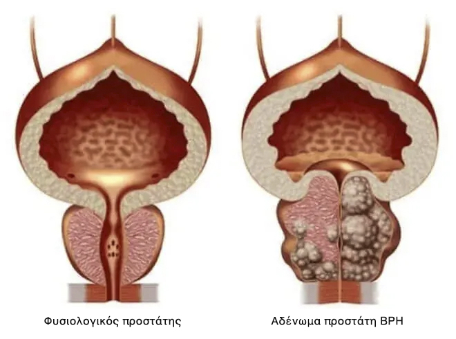

Στις ΗΠΑ και στις περισσότερες ευρωπαϊκές χώρες, όλοι οι άντρες αντιμετωπίζουν την προστατίτιδα σε 2-3 εβδομάδες, μια φορά στη ζωή, μια για πάντα. (η μέθοδος που περιγράφεται παρακάτω)

Klaus Seehofer, επικεφαλής Γερμανικού Ομοσπονδιακού Ινστιτούτου Βιοϊατρικών Φαρμάκων του Paul Ehrlich, Καθηγητής του Τμήματος Ουρολογίας
Η μέθοδος της μη επεμβατικής θεραπείας της προστατίτιδας με τη χρήση ενός φυσικού συμπληρώματος με βάση το Saw Palmetto ή αλλιώς Serenoa, ανακαλύφθηκε για πρώτη φορά από τον Γερμανό ουρολόγο Klaus Seehofer, στο πλαίσιο της έρευνας στο Γερμανικό Ομοσπονδιακό Ινστιτούτο Βιοϊατρικών Φαρμάκων του Paul Ehrlich.
Ο Klaus Seehofer ήταν ο πρώτος που απέδειξε κλινικά, την αποτελεσματικότητα της μεθόδου του κατά 98% και άρχισε να χρησιμοποιεί συμπληρώματα με βάση το Saw Palmetto στην πρακτική του, για τη θεραπεία της οξείας και χρόνιας προστατίτιδας.
Από το 1996, τα συμπληρώματα Saw Palmetto έχουν γίνει ιατρικό πρότυπο και συνιστώνται για ιατρική πρακτική στη Γερμανία και, αργότερα, σε πολλές χώρες της ΕΕ και στις ΗΠΑ.
Το μοναδικό ανάλογο, του οποίου η αποτελεσματικότητα και η ασφάλεια αναγνωρίζονται από την ευρωπαϊκή επιστημονική κοινότητα, πωλείται στην Ελλάδα με την ονομασία "Prostonix".
Εν τω μεταξύ στην Ελλάδα: άπληστοι γιατροί σε συνωμοσία με τα φαρμακεία κρύβουν αποτελεσματικά προϊόντα και σε ετήσια βάση «αρμέγουν χρήματα» από τους άνδρες
Η προστατίτιδα είναι η πιο κοινή ασθένεια μεταξύ των ανδρών άνω των 40 ετών και οι γιατροί σημειώνουν μια δυσάρεστη τάση για την «αναζωογόνηση» της νόσου. Οι άνδρες στρέφονται ολοένα και περισσότερο σε γιατρούς με «προβλήματα» σε ηλικία 30, 25 και ακόμη και 20 ετών.
Οι γιατροί εξηγούν τη δημοτικότητα της νόσου από τις προϋποθέσεις της. Οποιοσδήποτε άντρας:
- ακολουθώντας έναν καθιστικό τρόπο ζωής,
- κάνοντας ακανόνιστη σεξουαλική ζωή,
- έχοντας κακές συνήθειες,
- προηγούμενες μολυσματικές ασθένειες,
- κληρονομική προδιάθεση,
- υποφέροντας από το άγχος,
- το κρυολόγημα ή την υποθερμία,
σχεδόν εγγυημένα αποκτούν προβλήματα με τον προστάτη. Όσο περισσότερες προϋποθέσεις, τόσο πιο γρήγορα. Άλλοι στα 25, άλλοι στα 45, είναι θέμα χρόνου.
Συμπτώματα προστατίτιδας - ελέγξτε τον εαυτό σας:
Το 2020, το Τμήμα Ουρολογίας δημοσίευσε τρομακτικά στατιστικά στοιχεία: περισσότερο από το 55% των ανδρών άνω των 40 ετών αντιμετωπίζουν προβλήματα στον αδένα του προστάτη με τη μία ή την άλλη μορφή. Ο προσδιορισμός της παρουσίας της προστατίτιδας είναι αρκετά απλός και χωρίς ιατρική εκπαίδευση· τα περισσότερα από τα συμπτώματά της είναι συγκεκριμένα:
-
Συνεχής ενοχλητικός πόνος
- στο κάτω μέρος της κοιλιάς,
- στο όσχεο, στο περίνεο ή στο πέος.
-
Διαταραχή ούρησης
- συχνοουρία, κάψιμο στην ουρήθρα αίσθημα
- «δεν αδειάζει τελείως την κύστη»,
- δυσκολία στην ούρηση (ασθενές, αδύναμη ροή).
-
Διαταραχή της σεξουαλικής λειτουργίας
- μειωμένη λίμπιντο, επιδείνωση της
- διάρκειας και της ποιότητας της στύσης.
-
Διαταραχή εκσπερμάτισης:
- πρόωρη εκσπερμάτωση ή προβλήματα επίτευξής της,
- αδύναμη εκσπερμάτιση
- Αυξημένη κόπωση και ευερεθιστότητα του σώματος.
Ακόμη και παρά την προφανή μείωση της ποιότητας ζωής, πολλοί άντρες ζουν με την προστατίτιδα επί χρόνια, αγνοώντας τις μη αναστρέψιμες συνέπειες, που φαινομενικά λιγότερο ή περισσότερο συμβατές με τη ζωή, μπορεί να οδηγήσουν σε δυσάρεστες αισθήσεις.

Η μη θεραπευμένη προστατίτιδα οδηγεί πάντα σε αδένωμα του προστάτη («ανδρικός θάνατος»).
Μπορούν να γίνουν εν μέρει κατανοητοί· η διάγνωση του προστάτη προκαλεί σοβαρή εχθρότητα και αμηχανία σε όποιον άντρα κατανοεί αυτή τη διαδικασία. Επιπλέον, στη συντριπτική πλειονότητα των περιπτώσεων, μετά τη διάγνωση «προστατίτιδας», οι επισκέψεις στον ουρολόγο γίνονται ως ετήσια αγγαρεία. Οι γιατροί ανακουφίζουν τα πιο οξέα συμπτώματα με τη βοήθεια φαρμάκων, που «συνιστώνται από τους φαρμακοποιούς», αλλά με κάθε υποθερμία ή μη συμμόρφωση με το καθεστώς, η προστατίτιδα «εμφανίζεται ξανά».
Πώς αντιμετωπίζεται η προστατίτιδα σε μας (και πώς ΔΕΝ ΠΡΕΠΕΙ να αντιμετωπίζεται).
Αν ζείτε στην Ελλάδα, δεν θα μπορέσετε να απαλλαγείτε από την προστατίτιδα, ακόμα κι αν το θέλετε πολύ.
Πρότυπη θεραπεία για την προστατίτιδα στην Ελλάδα.
- Ένας άντρας πηγαίνει στην κλινική. Ιδιωτική ή Δημόσια – δεν έχει σημασία, γιατί στο τέλος θα πρέπει να πληρώσετε ούτως ή άλλως.
- Ο γιατρός πραγματοποιεί μια εξέταση και συνταγογραφεί μια δέσμη εξετάσεων. Κάποια δεν χρειάζονται καν, αλλά για το κάθε ενδεχόμενο, μήπως ξαφνικά ο άνθρωπος έχει κάτι άλλο που μπορεί να θεραπευθεί. Επιπλέον, οι ίδιες οι εξετάσεις κοστίζουν χρήματα.
- Μετά την εξέταση, ο γιατρός διαγιγνώσκει «προστατίτιδα» και συνταγογραφεί «συνιστώμενα φάρμακα». Τα φάρμακα που συνταγογραφούνται είναι αυτά που προορίζονται για την ανακούφιση των οξέων συμπτωμάτων της νόσου, αλλά όχι για τη θεραπεία της χρόνιας προστατίτιδας. Και φυσικά ο ουρολόγος, συνιστά τα φάρμακα από τις εταιρείες, των οποίων οι ιατρικοί εκπρόσωποι έχουν συνάψει συμφωνία μαζί τους. Όλοι γνωρίζουν για αυτά τα φάρμακα.
-
Εκτός από τα «συνιστώμενα» φάρμακα για την ανακούφιση των συμπτωμάτων, οι γιατροί συνταγογραφούν πάντα ορθικό μασάζ του προστάτη ή θεραπεία ειδικών μηχανημάτων με παρόμοιο αποτέλεσμα. Αυτή είναι μια ταπεινωτική και πολύ δυσάρεστη διαδικασία - το μασάζ γίνεται με ένα δάχτυλο στον πρωκτό του άντρα. Κατά μέσο όρο, ένα θεραπευτικό μασάζ περιλαμβάνει 10-14 συνεδρίες. Φυσικά, πρέπει να πληρώσετε για κάθε συνεδρία.
Στη Γερμανία, αυτό το μασάζ δεν γίνεται για περισσότερα από 20 χρόνια, αφού τα σύγχρονα φάρμακα μπορούν να θεραπεύσουν την προστατίτιδα χωρίς αυτό!

- Εκτός από τη βασική θεραπεία, οι γιατροί συχνά συνταγογραφούν φάρμακα για τη βελτίωση της σεξουαλικής λειτουργίας, τη βελτίωση της ποιότητας του σπέρματος, την «αποκατάσταση του σώματος» μετά από τα αντιβιοτικά κ.λπ.
Ως αποτέλεσμα, μια εφάπαξ θεραπεία της προστατίτιδας στην Ελλάδα θα κοστίσει σε έναν άντρα από 1.500 έως 8.000 ευρώ· αρχικά οι ουρολόγοι διαμορφώνουν πραγματικά μια πορεία θεραπείας με βάση τις οικονομικές δυνατότητες του κάθε ασθενούς. Σε αυτή την περίπτωση, ανακουφίζουν μόνο τα κύρια οξεία συμπτώματα της νόσου. Η χρόνια προστατίτιδα θα παραμείνει και θα εκδηλωθεί ξανά, μόλις ο άντρας γίνει υποθερμικός ή σταματήσει να ακολουθεί τη δίαιτα που έχει συνταγογραφήσει ο γιατρός. Με αποτέλεσμα τα ποσά αυτά πρέπει να καταβάλλονται ετησίως — σε αυτό ακριβώς οικοδομείται η κοινή ουρολογική-φαρμακευτική επιχείρηση στην Ελλάδα.
Πώς αντιμετωπίζεται η προστατίτιδα στις ΗΠΑ και στις περισσότερες ευρωπαϊκές χώρες (πώς ΠΡΕΠΕΙ να αντιμετωπίζεται)
Σε αυτές τις χώρες, για να θεραπεύσετε την προστατίτιδα, δεν χρειάζεται καν να δείτε γιατρό. Στα πρώτα συμπτώματα, αρκεί να πάτε στο φαρμακείο και να αγοράσετε ένα προϊόν, αποδεδειγμένο εδώ και δεκαετίες - ένα συμπλήρωμα με βάση το Saw Palmetto, του οποίου η κατά 98% αποτελεσματικότητα αποδείχθηκε στη δεκαετία του '80. Φυσικά, μετά από τις πολυάριθμες δοκιμές για την ασφάλεια της μεθόδου, το συμπλήρωμα έχει γίνει το χρυσό πρότυπο στη θεραπεία της προστατίτιδας «μια για πάντα» στις ΗΠΑ και σε πολλές ευρωπαϊκές χώρες. Φυσικά, ένα τέτοιο προϊόν δεν είναι επικερδές για την ελληνική μαφία των φαρμακείων - τελικά, είναι πολύ πιο κερδοφόρο να «κολλήσει κανείς» με ετήσια ανακούφιση από τον πόνο, παρά να θεραπεύσει μια ασθένεια εντελώς, με ένα φθηνό προϊόν, που είναι προσβάσιμο σε όλους.
Σε αντίθεση με τη χώρα μας, η ασφάλιση είναι ιδιαίτερα ανεπτυγμένη στις ΗΠΑ και στην Γερμανία. Οι ασφαλιστικές εταιρείες δεν ενδιαφέρονται για κάθε δεύτερο άντρα, να επισκέπτεται γιατρούς δύο φορές το χρόνο - εξάλλου, οι ασφαλιστικές εταιρείες αναγκάζονται να πληρώσουν για όλα αυτά και οι μισθοί των γιατρών εκεί, είναι μάλλον μεγάλοι. Αντίθετα, ενδιαφέρονται να κάνουν τη θεραπεία όσο το δυνατόν πιο αποτελεσματική και γρήγορη.
Μια για πάντα. Σε αυτές τις χώρες, τα συμφέροντα των ασφαλιστικών εταιρειών έχουν νικήσει τη μαφία των φαρμακείων και, ευτυχώς για τους απλούς άντρες, ένα αποτελεσματικό προϊόν για τη θεραπεία της προστατίτιδας είναι πάντα διαθέσιμο προς πώληση...
Θα αλλάξει προς το καλύτερο η κατάσταση στην Ελλάδα;
Δυστυχώς, δεν μπορεί κανείς να περιμένει θετικές αλλαγές στο έργο των ελληνικών φαρμακείων και γιατρών - εξάλλου, η φαρμακολογική επιχείρηση είναι μια επιχείρηση πολλών δισεκατομμυρίων ευρώ και οι πλουσιότεροι άνθρωποι της χώρας λαμβάνουν εισόδημα από αυτήν.
Ωστόσο, σήμερα δεν είναι καθόλου απαραίτητο να αγοράζετε φάρμακα στα φαρμακεία. Αυτό μπορεί να γίνει στο Διαδίκτυο σε ειδικούς ιστότοπους. Πρόσφατα εμφανίστηκε στην Ελλάδα ένα από τα πιο αποτελεσματικά γερμανικά προϊόντα, το Prostonix. Σχεδόν αμέσως μετά την εμφάνισή του κέρδισε την αγάπη του κόσμου.
Ας συγκρίνουμε πώς διαφέρει το Prostonix από την πιο δημοφιλή ισπανική θεραπεία για την προστατίτιδα, το Proquil, που προσφέρεται από τα φαρμακεία
 Prostonix |
 Proquil |
|
|---|---|---|
| Τιμή: | Μπορείτε να αποκτήσετε την συσκευασία με έκπτωση έως και 50% - στο πλαίσιο του προγράμματος "Men's Health" | Περίπου 30 ευρώ για 14 κάψουλες. προτεινόμενη θεραπεία: 2 μήνες = 1680 ευρώ |
| Φόρμα έκδοσης: | κάψουλες: 30 ανά συσκευασία | κάψουλες: 14 ανά συσκευασία |
| Δράση: | Θεραπεύει πλήρως την προστατίτιδα, συμπεριλαμβανομένης της χρόνιας. Μια για πάντα. Σε μόλις 1 ολοκληρωμένη θεραπεία. | Ανακουφίζει μόνο τα οξέα συμπτώματα της προστατίτιδας – πόνο και διαταραχές του ουροποιητικού. |
| Πρόσθετες ενέργειες: | º Αυξάνει τη λίμπιντο º Προλαμβάνει την πρόωρη εκσπερμάτιση º Βελτιώνει την ισχύ º Ομαλοποιεί τη λειτουργία της ουροδόχου κύστης º Βελτιώνει την κατάσταση των αιμοφόρων αγγείων |
Μαλακώνει το σκαμνί (κατά της δυσκοιλιότητας) |
| Παρενέργειες, βλάβη στον οργανισμό | Καμία. Απόλυτα φυσική σύνθεση. | º Εάν χρησιμοποιείται συχνά, μπορεί να προκαλέσει κακοήθεις αλλαγές στο αδένωμα προστάτη º Μειώνει την ισχύ º Προκαλεί εντερικά προβλήματα º Καταστέλλει το ανοσοποιητικό σύστημα, προάγει την ανάπτυξη αλλεργιών º Προκαλεί έντονο πόνο στο στομάχι |
| Αρχή λειτουργίας: | Έχει ολοκληρωμένη επίδραση στον προστάτη με μια ειδικά επιλεγμένη σύνθεση 11 φυσικών συστατικών, παρέχοντας αντιφλεγμονώδη και ενισχυτική δράση. Αφαιρεί όλη την παθογόνο χλωρίδα από τον προστάτη, βελτιώνει τη δομή και τη λειτουργία του προστάτη. Συνιστάται για χρόνια, συμφορητική και βακτηριακή προστατίτιδα. | Ανακουφίζει προσωρινά τον πόνο στον προστάτη, καλύπτοντας την πορεία της νόσου. Ωστόσο, μετά την υποχώρηση του φαρμάκου, η ασθένεια επιδεινώνεται ξανά. |
| Συστατικά: | Φυσικά φυτικά συστατικά και βιταμίνες | Έλαιο κολοκύθας, μονοένυδρο στεατικό ασβέστιο, κροσποβιδόνη, κιτρικός τριαιθυλεστέρας, διοξείδιο του τιτανίου και άλλη χημεία |
| Εγγυήσεις: | 365 ημέρες εγγύηση από τον κατασκευαστή | καμία εγγύηση |
Μπορείτε να αγοράσετε το Prostonix μέσω της επίσημης φόρμας παραγγελίας, όπου πρέπει να δώσετε τα στοιχεία σας
Κατά του προϊόντος αυτού έχει ήδη ξεκινήσει μεγάλη εκστρατεία, η οποία ξεκίνησε από τις μεγαλύτερες αλυσίδες φαρμακείων της χώρας. Ίσως πολύ σύντομα να εξαφανιστεί και από την πώληση. Συνιστούμε σε όλους τους άντρες να αγοράζουν το Prostonix, όσο είναι ακόμα διαθέσιμο. Το προϊόν αυτή τη στιγμή πωλείται με έκπτωση έως και 50%!
Σχόλια
Ανδρέας Παπαδήμου
Ευχαριστούμε για το ενδιαφέρον άρθρο! Η θεραπεία σε μας είναι πραγματικά πολύ ακριβή και δεν βοηθά. Παρήγγειλα το Prostonix, θα το δοκιμάσω.
Δημήτρης Αθανασίου
Συμφωνώ απολύτως! Το Prostonix είναι ένα θαυματουργό προϊόν. Το αγόρασα στη Γερμανία όταν πήγα διακοπές το περασμένο καλοκαίρι. Πριν από αυτό υπέφερα από χρόνια προστατίτιδα, περίπου 10 χρόνια. Προσπάθησα να την θεραπεύσω, αλλά όπως γράφτηκε παραπάνω, αυτή η θεραπεία έδωσε μόνο ένα προσωρινό αποτέλεσμα. Με τη χρήση του Prostonix, η προστατίτιδα εξαφανίστηκε εντελώς. Περισσότερο από έξι μήνες δεν έγινε εμφανές. Προηγουμένως, μπορούσα μόνο να ονειρευτώ τέτοιο αποτέλεσμα. Συνιστώ το Prostonix σε όλους τους άνδρες. Θα βοηθήσει!
Λεωνίδας Παπανδρέου
Παρήγγειλα. Πράγματι, απέκτησα ένα πακέτο Prostonix με έκπτωση 50%))) Έμεινα με ευχάριστη έκπληξη. Ευχαριστώ!
Μάρκος Βολιώτης
Έχω και εγώ την εμπειρία στη θεραπεία της προστατίτιδας με αυτό το προϊόν. Το αγόρασα, μόνο που τότε δεν υπήρχαν προσφορές, και μου κόστισε περίπου 100 ευρώ. Αλλά δεν πειράζει, το κυριότερο είναι ότι με βοήθησε να απαλλαγώ από την προστατίτιδα σε περίπου 3 εβδομάδες, χωρίς κανένα μασάζ.
Αλέξανδρος Στάμου
Παρήγγειλα. Παραδόθηκε την επόμενη μέρα, κατευθείαν στο σπίτι μου.
Σωκράτης Τσούλφας
Κάποτε παρακολούθησα ένα τηλεοπτικό πρόγραμμα για τη φαρμακευτική επιχείρηση. Κάτι σαν ερευνητική δημοσιογραφία. Μίλησαν επίσης για αυτό το προϊόν. Ότι προς το παρόν υπάρχει, αλλά σύντομα μπορεί να μην υπάρχει. Πρέπει να το πάρω όσο υπάρχει.
Παναγιώτης Παπαγεωργίου
Έχω χρόνια προστατίτιδα από τα 28 μου. Τώρα είμαι 41. Σε αυτό το διάστημα την θεράπευσα δύο φορές, όταν υπήρξαν οι σοβαρές παροξύνσεις. Την τελευταία φορά, που οι γιατροί μετά βίας με έσωσαν. Είπαν ότι λίγο ακόμα και η προστατίτιδα θα είχε μετατραπεί σε καρκίνο του προστάτη. Γι'αυτό, συμβουλεύω όλους όσους έχουν προστατίτιδα να απαλλαγούν από αυτήν όσο το δυνατόν νωρίτερα. Αυτή είναι μια πολύ επικίνδυνη ασθένεια.
Ειρήνη Καρά
Πρέπει να παραγγείλω αυτό το προϊόν για τον άντρα μου. Ευχαριστώ!
Γιάννης Στεφανίδης
Το αγόρασα. Και, πράγματι, βγήκε με έκπτωση 50%. Δεν υπήρξαν ποτέ τέτοιες προσφορές. Ευχαριστώ τους κατασκευαστές!
Γιώργος Φαλτσέτας
Το Prostonix είναι το καλύτερο προϊόν από όλα! Συμφωνώ με τον συγγραφέα του άρθρου και όλους τους σχολιαστές που το επαίνεσαν. Το χρησιμοποίησα πριν 3 μήνες περίπου. Η προστατίτιδα έχει φύγει τελείως! Υπήρχε για αρκετά χρόνια, εξαιτίας της το πέος μου δεν στεκόταν καλά και η εκσπερμάτωση γινόταν γρήγορα. Τώρα όλα έχουν επιστρέψει στο φυσιολογικό.
Σάββας Πετρόπουλος
Έλαβα το Prostonix χθες και αρχίζω να το παίρνω σήμερα.
Μπάμπης Κανέλλης
Διάβασα περισσότερα για το Prostonix. ΕΝΤΥΠΩΣΙΑΚΟ! Παρήγγειλα. Υποσχέθηκαν ότι θα το φέρουν στο σπίτι αύριο και θα πληρώσω κατά την παράδοση. Πολύ βολικό.
Κώστας Ελευθερίου
Παιδιά, αυτό είναι πραγματικά το κάτι άλλο! Το αγόρασα την περασμένη εβδομάδα. Τώρα δεν έχει μείνει ούτε ένα σύμπτωμα της προστατίτιδας. Ο πόνος εξαφανίστηκε, σταμάτησα να τρέχω συχνά στην τουαλέτα και ο πόνος κατά την ούρηση εξαφανίστηκε επίσης. Επιπλέον, η ισχύς έχει βελτιωθεί αισθητά και η διάρκεια του σεξ έχει αυξηθεί. Αισθάνομαι υπέροχα. Με την έκπτωση 50% αξίζει σίγουρα να το αγοράσετε. Ναι, και θα έδινα και 100 ευρώ γι' αυτό το προϊόν. Η αποτελεσματικότητα του προϊόντος ήταν ευχάριστη έκπληξη για εμένα.
Μιχάλης Βασιλάκης
Ναι, μου το συνέστησαν ως αποτελεσματικό προϊόν για την προστατίτιδα. Αλλά δεν μπορούσα να το βρω πουθενά. Σας ευχαριστώ για την ευκαιρία να το παραγγείλω, και μάλιστα με την προσφορά.
Παύλος Αθανασιάδης
Αυτό είναι που χρειάζομαι. Δεν αντέχω τον πόνο και έχω ήδη βαρεθεί να τρέχω στην τουαλέτα κάθε 2 λεπτά... Έχω προβλήματα και με τη γυναίκα μου. Είμαι πολύ κουρασμένος.